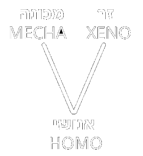

הזדמנויות ומגבלות באפיון זנים
השאלה האתית
בבואנו לאפיין את הזנים השונים שפגשה האנושות ברחבי הגלקסיה, נתקל הקסנולוג הממוצע במלכוד: כיצד לתאר זן שלם באופן מדויק, ובמקביל, באופן מוסרי?
נוכל להתחיל כמובן בתיאור הביולוגי גרידא: מאפיינים בולטים, זוויגים, גבהים, פיגמנטציה וכדומה. אך משם העניין כבר מתחיל להסתבך. האם ניתן לומר שזן האקווארים חיים מתחת למים? נכון, יש להם מאפיינים פיזיולוגיים המאפשרים ספיגת חמצן תת-ימית, אך עשרות אלפים מהם משרתים ברחבי הצי על ספינות חלל. האם ניתן לומר שהקודומא אדישים? כך אולי נדמה לבני האדם, שרגילים לתקשורת המבוססת על שינויים גדולים בהבעת הפנים. אך בעיני הקודומא, השינויים הקטנים ביותר בתווי הפנים (ברמת תת-המילימטר) יכולים לבטא התעלות אדירה או כאב אינסופי.
על מה נשים דגש? האם על מה שמבדיל אותם מבני האדם, או שמא על מה ש דומה? על מה שבני הזנים האלה מדגישים בעצמם במפגשם עם זנים אחרים, או דווקא מה שקופץ לעין האנושית?
בקלות ניתן גם ליפול לכשל ההכללה. מצד אחד: לא יתואר הרי שאקדמאי רציני יבוא ויאמר ״כל הפלאקור הם מנומסים״, או ״ללודו נאמנות שבטית עמוקה״, שהרי, גם אם בקרב הפלאקור רווחות הלכות נימוסין מדוקדקות, וגם אם מרבית בני הלודו הם חלק ממבנים שבטיים, הכלל לא מעיד על כל הפרטים.
ומן הצד השני: הלא אין מאפיינים תרבותיים דומים לאנשים שבאים מאותו מקום וחולקים היסטוריה משותפת? והלא אין מאפיינים ביולוגיים שמשפיעים על כל אלה? הרי האמירה ש״הזיגוטים לעולם לא יניחו לך בשיחה עד שהם יבינו את כוונתך עד תומה״ היא אומנם לא מדויקת בכל המקרים, אך במקרים רבים מספיק כדי שיהיה מדובר ביותר מסטיגמה. אין עשן בלי אש, ואין מצב שאני מתחיל שיחה עם אנדוראיד בלי דוקטורט עב-כרס שאני יכול לזרוק עליו בזמן שאני בורח.
ננסה בכל זאת, על בסיס המסורת הקסנולוגית הקונבנציונאלית, לאפיין בפרק הקרוב את זני שביל החלב (או לפחות, את אלה שפגשנו. מי שחובב קונספירציות וסיפורי מעשיות מוזמן לטוס למאדים ולהיכנס לאחד משיעורי ה״היסטוריה״ של עמיתי לסגל האקדמיה הפרופסור ואן- דר-שטרוך).
בסיס טוב לשיח אפיון הזנים נמצא בשני מושגים: ציר ויטה, וסולם זיאוד לקידמה זנית.
ציר ה-V- הומו-ויטה, קסנו-ויטה, מכה-ויטה

האינסטינקט האנושי של הקיטלוג מתחיל מדחף פשוט: כמה דבר דומה לי, וכמה הוא שונה. כך גם בחלוקה המדעית לזנים, אלא שכאן השוני נחלק לשני סוגים: כמה הוא זן ביולוגי ששונה מהדי-אן-איי האנושית, וכמה הוא זן מכאני שחורג מתחומי הביולוגיה.
כל זן נמצא במיקום כלשהו על המשולש, לאורך אחד הצלעות או במיקום כלשהו על הרצף במרכז. למשולש שלושה קודקודים: אנושי, זר, ומכונה.
-
אנושיות (HOMO): ביולוגיה, גנטיקה, אלמנטים תרבותיים ותקשורתיים שדומים לאלה של המין האנושי שמקורו בכדור הארץ. בקצה הסקאלה הזו נמצאים בני האדם.
-
זרות (XENO): ביולוגיה, גנטיקה, אלמנטים תרבותיים ותקשורתיים ששונים לחלוטין מאלה של המין האנושי. כולל בין השאר: הישענות על אלמנטים ומינרלים שונים, תקשורת פרה-מילולית, שימוש הגוף במקורות אנרגיה שאינם קלוריים, וכו׳. אין כרגע יצור שמוגדר זר מוחלט, בשל הדמיון הרב של הזנים החוצנים לבני אדם.
- מכאניות (MECHA): אלמנטים מלאכותיים שמחליפים אלמנטים ביולוגיים, ובקצה - זן שהוכר כתבוני שכולו מכאני. בקצה הסקאלה הזו נמצאים הזיגוטים.
הטווחים שבין אנושי לזר, ואנושי למכונה, הם צירים. החוקרים בימינו מחלקים את כל הזנים המוכרים לאחד משלושת הקטגוריות, על פי קרבתם לאחד משלושת הקטבים של ה-V.
סולם זיאוד לקידמה זנית
בשנים שלפני המפגש עם החוצנים הראשונים, העלתה האנושות השערות רבות בנוגע לאפשרות של קיומם, ולאופני התפתחות אפשרית של זנים בחלל. סולם קַרְדָשׁב של אותו אסטרונום רוסי צברה פופולריות, וגם סולם סייגן המודד ביטים של מידע, אך שניהם לא כללו בתיאוריות שלהם משתנה אחד מרכזי: הארלניאנים.
בשנת 2267 ניסח החוקר הירושי זיאוד את גישתו למיפוי התפתחות זנית שמכניסה למשוואה את הארלניאנים ואת השפעתם על הגלקסיה שלנו, וכוללת אף השערות להיתכנות של זנים מפותחים אף יותר מהם. הסולם מתייחס למידה בה זנים יודעים לרתום את טכנולוגית האנטי-חומר הארלניאנית, אותם כורים המוזנים אירידיום שיכולים להפעיל מכשירים ארלניאנים מתקדמים כמו מנוע קיפול ומחולל כבידה.
הסולם מתחיל בדרגה 0, ונמשך עד דרגה 5:
- דרגה 0 - זן שיודע לרתום רק את האנרגיה המיידית הזמינה שנמצאת באופן טבעי בסביבתו (לדוגמא: האדם הקדמון).
- דרגה 1 - זן המשתמש בטכנולוגיות שרותמות אנרגיות בסיסיות: נפט, שמש, רוח, גרעין, וכו׳.
- דרגה 2 - זן שמשתמש בסוג אחד של פיתוח טכנולוגי או יותר, הרותם אנטי-חומר באופן מוגבל, ללא יכולת להמציא טכנולוגיה שוות ערך.
- דרגה 3 - זן בעל יכולת ייצור של טכנולוגיה הרותמת אנטי-חומר באופן מוגבל, כדוגמת מנוע קיפול או נוגד-כבידה.
- דרגה 4 - זן בעל יכולת ייצור טכנולוגיה שרותמת אנטי-חומר באופן בלתי-מוגבל, כלומר, ייצור של אנרגיה מכל האנטי-חומר הזמין בגלקסיה.
- דרגה 5 - זן שמתעלה מעבר למגבלות פיזיקליות ושולט ברובד הקיום הפיזיקלי. שווה ערך לאלוהות.
כל הזנים המוכרים היום לאנושות, מלבד הארלניאנים, נמצאים בדרגה 2. הארלניאנים הם זן מדרגה 3. כרגע לא ידוע על קיומו של זן נוסף מדרגה 3, או זן מדרגה גבוהה יותר.
הערה בנוגע להומנואידיות
בכל הכוכבים של הזנים החוצנים שפגשה האנושות, אותם זנים לא היו הגורמים הביולוגיים היחידים: מגוון צמחים, פטריות, ובעלי חיים אחרים, שונים ומשונים, מאכלסים את כוכביהם בדומה לכוכב שלנו. המדענים של אותם הזנים הגיעו לתיאוריות הדומות לתיאוריה האבולוציונית שאצלנו מיוחסת לדרווין, עם הוכחות מוצקות להתפתחות מינים לאורך מיליוני שנים.
אם כך, עולה כמובן השאלה: כיצד בכל הכוכבים האלה, הזן הדומיננטי כל כך דומה לזה ששלט בכדור הארץ: הומנואידים, דו-רגליים, זקופי גב, עם אגודלים מנוגדים, וברוב המקרים, אפילו וריאציה כלשהי של בדיחות אבא מביכות.
החוקרים עדיין חלוקים על הסיבות לכך. יתכן ומדובר בצורה פיזיולוגית שמאפשרת יתרון יחסי על פני זנים אחרים. אולי בכלל מדובר בצופן גנטי המוטמע בקונספט של החיים עצמם, שמתפתח בכל כוכב באופן טבעי. ישנם אלה הטוענים, וזה טיעון מלא קסם אך לא מבוסס כלל, שמקור אחד לכל הזנים ההומנואידים, ואחרים מוסיפים ואומרים שזן מתקדם יותר הוא שיצר את התנאים להתפתחות כל הזנים הללו.
כך או כך, ההומנואידיות של כלל הזנים הללו אינה ניתנת להכחשה, והדמיון בין הזנים החוצנים לבני האדם הוא שאיפשר במובנים רבים את הדיפלומטיה עליה מבוסס הצי האנושי.